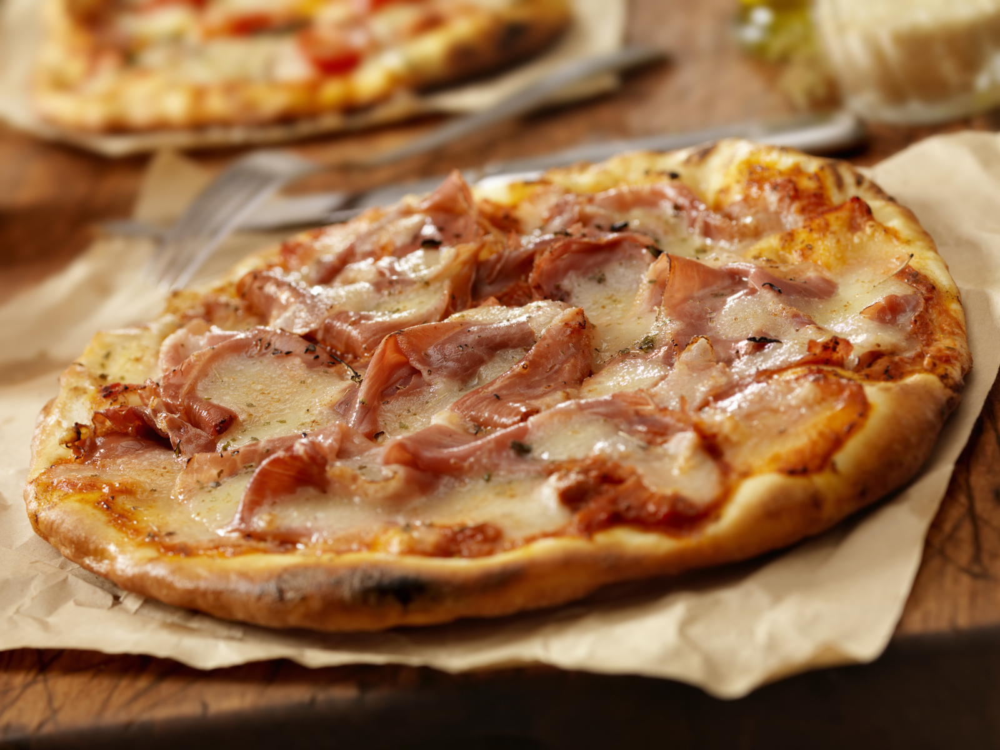

Pizza Jamón y Queso

Ingredientes
Masa
2 vasos de harina
1 taco de levadura
Agua
Aceite de Oliva
Sal
Pizza
250 gr. de jamón dulce en lonchas
125 gr. de jamón dulce a tacos
Queso rallado
Tomate frito
Orégano
Pasos
Lo primero es preparar la masa
Calentar el agua hasta que este tibia solo atemperar y disolvemos en ella la levadura prensada
Mezcla en un bol todos los ingredientes de la masa (harina, levadura, aceite y dos pellizcos de sal)
Mezclamos todo hasta que se quede una masa pringosa y estirada entre las manos
La dejamos reposar unos 20 minutos a temperatura ambiente (tiene que estar cubierta con un trapo)
Estiramos la masa
Con la ayuda de un rodillo o incluso con las manos le damos forma (Circular o rectangular)
Enciende el horno, hay que ponerlo a a 225 o 230ºC con calor arriba y a bajo y sin aire
Cubre la masa con el tomate frito
Pon el orégano
Después añade el jamón
Meteme la pizza en el horno cuando este caliente dejamos de 10 a 12 minutos
La sacas del horno y la dejas enfriar un poco
Mensaje para cuando termines
Que aproveche 😃